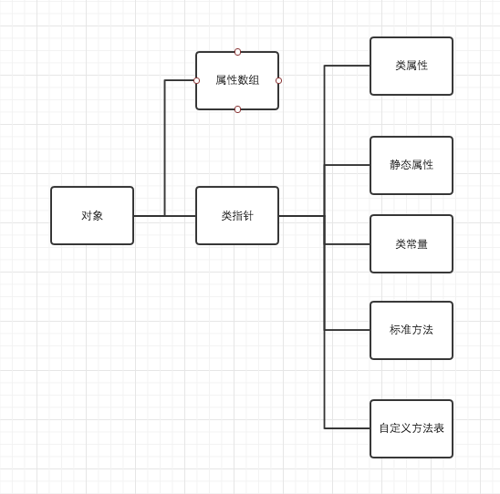
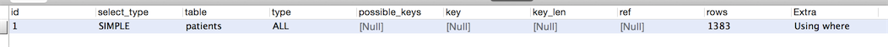
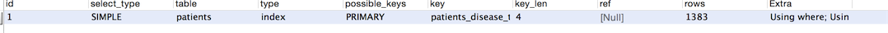

PHP核心技术与最佳实践
1. 面向对象思想的核心概念
1.1 源码定义变量和对象
变量源码定义:
#zend/zend.h
typedef union_zvalue_value{
long lval;/*long value*/
double dval; /* double value */
struct {
char *val;
int len;
};
HashTable *ht ; /* hash table value*/
zend_object_value obj;
}zvalue_value;
对象源码定义:
#zend/zend.h
typedef struct_zend_object {
zend_class_entry *ce;//类的入口
HashTable *properties; //属性组成的HashTable
HashTable *guards;/*防止递归调用的 protects from __get/__set ...recursion */
}zend_object
对象的组成:

1.2 对象和数组
序列化后对象和数组的区别
//对象
$str = serialize($student);
0:6:"Student":2:{s:4:"name";s:3:"Tom";s:6:"gender";s:"mail";}
$student_arr = array("name"=>"Tom","gender"=>"male");
//数组
$str_arr = serialize($student_arr);
a:2:{s:4:"name";s:3:"Tom";s:6:"gender";s:"mail";}
序列化后,对象和数组的区别只是对象多一个指针指向它所属的类.
2. PHP与数据库
2.1 SQL基本优化
避免在列上,会导致索引失败
select * from t where year(d) >=2011; //优化为 select * from t where d > = '2011-01-01';使用JOIN时,应该用小结果集驱动大结果集,同时把复杂的JOIN查询拆分为多个Query,因为JOIN多个表,可能导致更多的锁定和堵塞.
select * from a join on a.id = b.id left join c on c.time = a.date left join d on c.pid = b.aid left join e on e.cid = a.did模糊like查询,避免%%
select * from t where name like = '%de%'; //优化为: 但是中文就不知道怎么玩了...... select * from t where name > = 'de' and name < 'df';- 仅列出所需的查询字段,少用*号,对速度不会有明显影响,但会影响内存.
- 使用批量插入语句节省交互.
limit的基数比较大的使用使用between.
select * from t order by id limit 1000000,10; //优化为 select * from t where id between 1000000 and 1000010 order by id;但是between也有缺陷,如果id中间有断行,或者中间部分id不读取的话,总读取的数量会少于预计数量,在取比较厚的数据用desc方向查找.
- 避免使用NULL
- 不要使用count(id),而是count(*)
- 不要做无谓排序,应该在索引时中完成排序.
多explain select * ..查询
explain select id from patients where created_at > '2015-11-11';
explain select id from patients where id > 0 ;
注意,主要优化一般都看type,索引和没索引,查询时最少应该达到range级别,最好达到ref,下面列举下type从好到坏的结果
- system(系统表)
- const(读常量)
- eq_ref(最多一条匹配结果,通过是通过主键访问)
- ref(被驱动表索引引用)
- fulltext(全文索引检索)
- ref_or_null(带有空值的索引查询)
- index_merge(合并索引结果集)
- unique_subquery(子查询中返回的字段是唯一组合或索引)
- index_subquery(子查询返回的是索引,但非主键)
- range(索引范围扫描)
- index(全索引扫描)
- ALL(全表扫描).
建索引一般的原则:
- 我在关键字段设计索引
- 建索引的字段和结果集最好分布均匀,或许符合正态分布
- 不太结果集中结果单一的列上建立索引(例如性别列,一般只有01)
2.2 MySQL服务器调整优化措施
关闭不必要的日志
//查看日志的打开情况. show variables like '%slow%'; //定期打开慢查询条数,方便优化. show global status like '%slow%';增加MySQL允许最大连接数
//查看最大连接数 show variables like 'max_connections';
2.3 MySQL瓶颈及应对措施
MySQL单表达到千万级以上,无论如何优化,查询都会很慢.
- 增加MySQL配置的buffer和Cache,这样需要增加CPU个数和内存的大小,这是最简单的优化
- 对数据库进行分区,分表.
- 使用NoSQL辅助解决方案,Memcached和Radils等
- 只用中间件做数据拆分和分布式部署,例如阿里的Cobar
2.4 数据库设计
2.4.1 数据库分区
分区:把一个数据库表的文件和索引分散存储在不同的无力文件中:
查看是否支持分区
show variables like '%partition%'
分区创建表,分区类型包括Range,List,Hash,Key,Range最常用
create table foo(
id int not null auto_increment,
created datetime,
primay key(id,created)
) engine = innodb partition by range (to_days(created))(
partition foo_1 values less than (to_days('2009-01-01')),
partition foo_2 values less than (to_days('2010-01-01'))
)
创建完表后,谈价分区
alter table foo add partition(
partition foo_3 values less than(to_days('2011-01-01'));
)
删除分区
alter table foo drop partition foo_3;
检索information_schema数据库,查看分区信息
select * from partitions where partition_name is not null
show variables like 'datadir'
如果MySQL设置innodb file per table为on的话就会
foo#p#foo_1.idb
foo#p#foo_2.idb
后续也可以通过先insert 然后explain查询执行的分区
分区为了通过把数据分散到不同的磁盘上,提高系统IO吞吐
弊端
- 主键/唯一索引必须包含分区字段,如primary key(id,created),对InnoDB,大主键性能不好
- 使用分区的时候不要再使用主键,会影响性能
- 每个表最多2014个分区,过度分区消耗大量内存
- 分区的表不支持外键
- 分区后,可能造成索引失效,需要验证分区可行性
2.4.2 数据库分表
一般按照查询规则分表.
2.5 防止SQL注入
- 整形变量/字段,使用intval()函数把传入的参数转化为一个数值.
- 对于字符型变量,addslashes会把单引号、双引号、反斜杠和空字符转化为反斜线的溢出字符,或者使用PDO的参数绑定来提高安全性
- 转义/过滤一些特殊字符%等.
- 保护表结构等关键信息.
- 做好数据库备份.
3. 高性能网站架构方案
- 减少HTTP
- 动态内容静态化
- 优化数据库
- 负载均衡
- 缓存